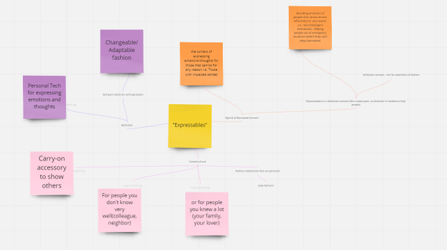
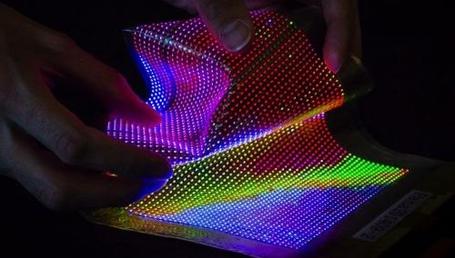
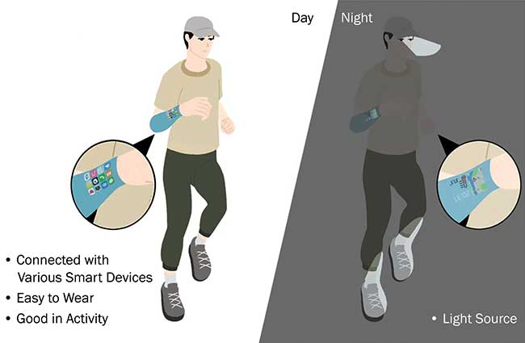
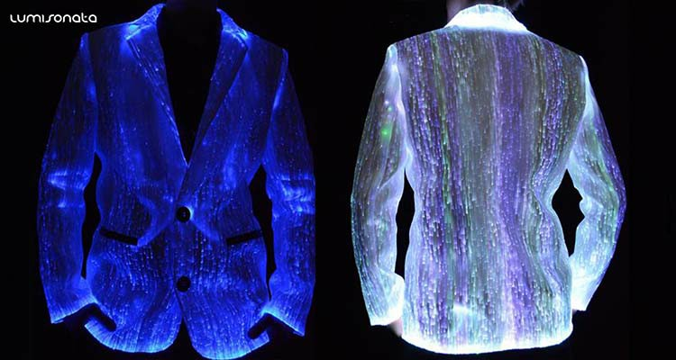
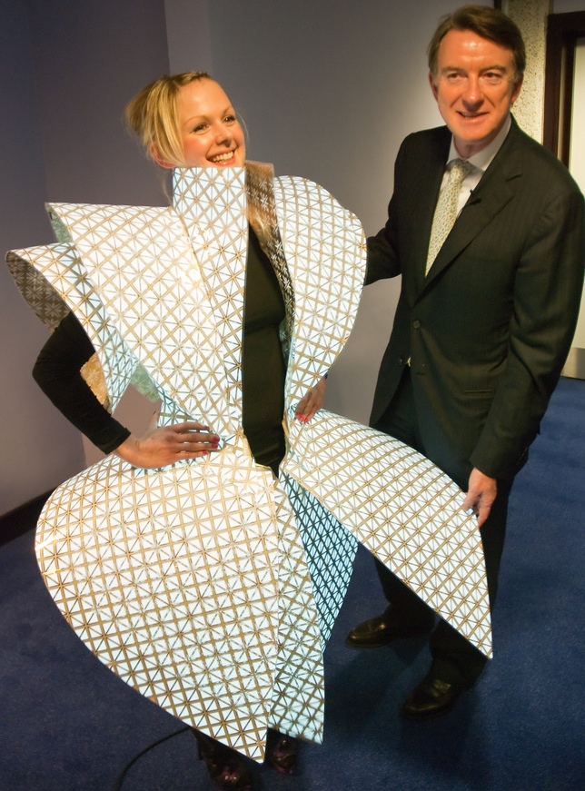
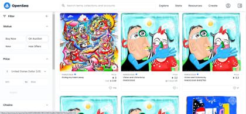
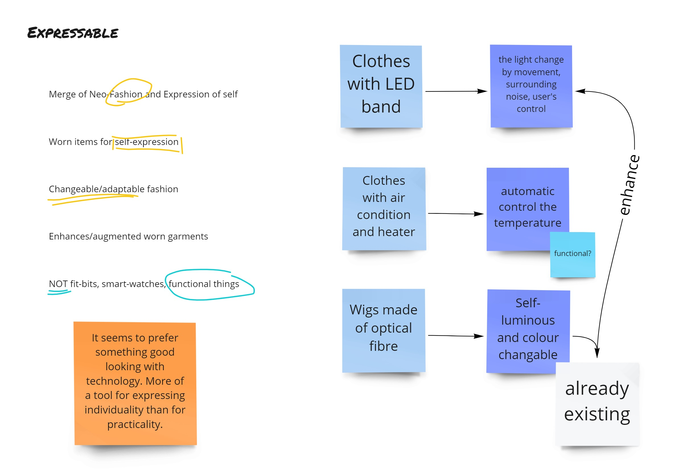

Ideation & Define
The theme of our team Flash Studio is Expressible, and the official introduction of Expressible is
"Merge of
Neo-Fashion and Expressions of Self;
Worn items for self-expression;
Changeable/adaptable fashion;
Enhances / augmented worn garments;
", which actually gives us a lot of
inspiration, plus this year's theme of DECO3850/7385 is Near-future Mundane. This leads us to imagine the
innovation that
can be accommodated in clothes in the near future.
In the thousands of years or even tens of thousands of years before the birth of clothing, clothing has
evolved from a single function of keeping us warm and providing us relatively protection to an important
part
of cultural and social life.
Clothing is the external projection of our inner self-image, is our first social interface. It links our
external image with our social identity and has an important social impact. At the same time, individuals
use clothes to strengthen their emotions and express their feelings, reflecting their self-identity and
material practice (Kodžoman, 2019).
Therefore, clothing is the design carrier that we have identified from the very beginning. When we
brainstorm about Expressible, we focus on how to give more features to clothes in the near future.

figure 1 Brainstorm record
In today's digital age, clothing, as a personal item for each of us, is rarely equipped with
digital technology. So after brainstorming, we decided to design next-generation clothes with the use of
digital technology.
Intended Concept & Ideal Experience
We named our concept product Mark II-VII, which was inspired by the name of Iron Man's armor. Because our
product can bring about interactions that none of the previous clothes can do through the
application of digital technology, through the new interaction possibilities brought about by this digital
technology to explore a new level of self-expression. This dynamic clothing is consistent with Iron Man's
deformable armor, and we hope to convey the dynamic design concept to our target users.
While fashion is a universal form of self-expression regardless of demographic, the MARK II-VII would be
great for socially concerned young adults born between 1995 and 2010 (referred to as Generation Z)(From
Proposal Report)
.
But as a concept designed for daily life in the near future, with GenZ as a breakthrough and popularization,
our vision is to extend our target users to year-round users.
In our ideal plan, we will use flexible OLED as the material of MarkII-VII, flexible OLED can make
electronic displays foldable, showing the characteristics of cloth, and fabric-based
OLED displays have emerged for wearable devices.


MarkII-VII will use flexible OLED instead of textile materials for manufacturing. MarkII-VII has a variety
of shapes for users to choose. Users can choose winbreaker, jacket, T-shirt, skirt or bottoms.
Users can buy different shape to match, the selling point is that the pattern on the clothes can be changed
at
any time. At the same time,
MarkII-VII will also be equipped with infrared sensors, distance sensors, heart rate sensors, motion
sensors, Bluetooth, WiFi, cellular data network modules and other sensors and connection hardware, as well
as corresponding computing chips. Through the arrangement of sensors, MarkII-VII can interact by detecting
the surrounding environment and the state of the user. At the same time, the use of WiFi, Bluetooth
and cellular data network allows Mark series clothing to connect to each other or remotely through the
server,
which can give clothes more imagination of social value and interaction possibility.
Because the entire MarkII-VII is made of a display screen, its patterns and colour are no longer static
and immutable. Users can change the patterns and colours of MarkII-VII anytime and anywhere through relevant
applications or websites on mobile phones, computers or other devices. At the same time, the patterns and
colours
is no longer static, but like the dynamic wallpaper on the computer and mobile phone, it can change with
time, surrounding, and user status. The real-time modification of patterns and the implementation of dynamic
patterns are realized through the practical application of sensors and connection technology.


The patterns on MarkII-VII can be patterns brought from online market created by artists or from users'
self-creation.In order to show their own uniqueness, users can also use fingerprint sensors
or
3D face recognition, which are commonly equipped on mobile phones and computers, to generate
user-specific and never repeated exclusive patterns through their unique personal biometric by our
special encryption algorithm. This exclusive pattern can make clothes unique and enhance the social value
brought by uniqueness.
We call these unique or copyrighted designs TOKENs. At the same time, we introduce the emerging concept of
NFT
(Non-fungible token), which gives each pattern uniqueness and claim ownership through blockchain.
By using NFT tokens, users can guarantee the ownership and specificity of the pattern, turn the patterns
into
a certified digital asset, and retain the social and identity value of the clothing.
With the help of the concept of NFT, the pattern can also become a tradable digital asset. Through the NFT
trading platform, users can trade tokens. Every time a user buys a new token means this new piece of
clothing, which can greatly prolong the life cycle of MarkII-VII, effectively occupying the living space of
fast fashion. the living
space of fast fashion. Fast fashion is an unsustainable and unethical industrial model, which makes profits
by rapidly iterating cheap and low-quality clothes, resulting in waste. Also,
its production process also brings problems of environmental pollution and labour welfare (Oshri, 2022).

figure 5 Storyboard for ideal scenario
Through the NFT trading, users may have a large number of tokens. Mark II-VII can automatically activate
different
tokens under various circumstances through the user's setting. For example, the user can set a colourful
dynamic
pattern to be activated when running, and Mark II-VII will automatically switch when the motion sensor
detects that the user
is engaged in intense exercise.
We also created the interaction between users. When two Mark users' communicative actions are detected by
sensors, such as shaking hands, hugging or greeting, the patterns of the two will impermanently merge
according to
a set of algorithms by NFC(Near-field communication) communication, which can enhance the social connection
between users and make clothes play a greater
role in social situations.
Reflection
At the conceptual stage, our definition of MarkII-VII and the design scenario is entirely for the near
future mundane. Through the
introduction of digital technology, we give clothes novel and brand-new interaction ways. The
function of MarkII-VII will fully serve the embodiment of self-expression and social functions,
without any practical functions. When I started brainstorming by myself, the idea of create a new
interaction for clothes
first came to my mind. But how to give feedback about interaction, as a self-expression instrument, it must
be able to
affect the people and the environment around it. I have considered the vibration and the changes of
clothes' shape, but none of them is as direct and eye-catching as the use of light.
Fortunately, my teammates accepted my idea and improved it in this way, by adding user interaction and
NFT's token concept. I think the addition of these two functions is wonderful and excellent. The
addition of these two functions gives clothes new possibilities on top of self-expression that cannot be
realized before digital technology is added to clothes. At the same time, these two functions can even be
extended to the field of the Internet of things, greatly broadening the imaginative boundary of clothing
functions.

figure 7 braindumping
This brand-new digital fashion expression is an innovation of traditional clothing. This non-static design
allows our users to update their outfit appearance at any time. This self-image renewal does not rely on
the replacement of physical clothing syle, which greatly reduces the waste caused by the fashion
industry and consumerism, but not at the cost of suppressing people's desire for self-expression. This is a
response to our definition of two problem spaces: self-expression and environmentally friendly. At the same
time, the new interaction on clothes also greatly strengthens and emphasizes the social attributes of
clothes. Another innovation in self-expression is the design of the NFT
token system. Through the declaration of the uniqueness and ownership of the pattern by NFT, it gives the
uniqueness and asset value of the pattern. Each person is unique, and each person's mind is unique, which
gives
each of us a unique personality, self-expression is the appearance of personality. The unique pattern of
MarkII-VII satisfies the expression of self-unique personality.
Another selling point of our design is the free tokens trading, which is a function with a lot of
room for development. A fully formed transaction ecology can even revolutionize the clothing purchase
experience.
For the design of the concept, we have carried on the wild creativity according to the background of the
near future. But at this stage, we did not consider the feasibility and how to implement the functions of
the prototype. The lack of feasibility analysis leads to a large gap between our prototype products and
concepts, like the token trading system, which is very hard to implement in prototype stage. At
this stage, we should conceive how our creativity should be presented through the prototype to convey our
design intention.
Next: Product →
Learn about our product and experience of use
D. Kodžoman, “The psychology of clothing,” Textile & leather review, vol. 2, no. 2, pp. 90–103,
2019.
Oshri, H. (2022). Council Post: Three Reasons Why Fast Fashion Is Becoming A Problem (And What To Do About
It). Retrieved 31 March 2019, from
https://www.forbes.com/sites/theyec/2019/05/13/three-reasons-why-fast-fashion-is-becoming-a-problem-and-what-to-do-about-it/?sh=7b90fac6144b

 Concept
Concept
 Home page
Home page